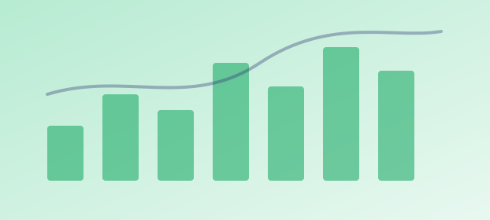

GA4 and event setup
The foundation every report depends on.
- GA4 property and event plan
- Ecommerce and lead events
- Consent mode setup
Marketing · Analytics & Tracking
We set up GA4, Tag Manager and conversion tracking so every channel reports the same number, then build the dashboard that shows what actually drives revenue.
Without trustworthy tracking, every budget decision is a guess.
“Google and Meta both claim the same sale.”
Each platform counts conversions its own way.
“Our GA4 numbers don’t match our CRM.”
Events and conversions were never set up consistently.
“We don’t know which channel drives revenue.”
Leads lose their source somewhere between the click and the deal.
“Our reports take a week to put together.”
Data lives in five tools and a spreadsheet.
Every channel depends on tracking being right first. That’s why it’s usually where we start.
Each part fixes a gap. Together, you see the whole funnel.
The foundation every report depends on.
Tags that fire when they should.
Platforms that learn from real results.
One view of what drives revenue.
One version of the truth, updated automatically.
It depends on what you can’t see today.
Your GA4 setup is missing or broken.
Ad platforms can’t see what converts.
The data exists but nobody can read it.
Most setups need all three. The audit shows which gap is costing you the most.
Analytics only works if every channel and page is measured the same way.
Your measurement system
Built by Marketing, used by three other disciplines
Heatmaps and funnel data show which layouts actually convert.
Explore designView and retention data decide which videos get more budget.
Explore videoClean code and a data layer make tracking accurate and fast.
Explore techOur 4-D Growth Framework, applied to measurement.
We audit your GA4, tags, pixels and CRM data, and list every gap.
You get: a tracking audit with fixes ranked.
We write a measurement plan: events, conversions and dashboards.
You get: an approved measurement plan.
We implement tags, conversions and dashboards, and test every one.
You get: verified tracking and a live dashboard.
We monitor data quality and report monthly on channel ROI.
You get: monthly ROI reporting and alerts.
We test every tag before go-live and monitor data quality after, so numbers stay trustworthy.
Sample projects, ready to be replaced with real portfolio pieces.

The problem
Ad platforms claimed 1.6x the sales the store recorded.
The result
+38% ROAS in two quarters
The problem
Leads lost their source between the form and the CRM.
The result
−27% cost per qualified lead
Sample copy, replace with a real testimonial
“For the first time, marketing and finance agree on what each channel is worth.”
Any business spending on more than one channel.
A one-time audit, a full setup, or ongoing measurement.
Find every gap.
Tracking and dashboards, done properly.
Data you can keep trusting.
Usually yes. GA4 is free, connects to Google Ads, and gives a neutral view across channels that platform reports don’t.
Server-side tracking sends events from your server instead of the browser, so ad blockers and browser limits lose less data. It helps most when you spend heavily on Meta or Google Ads.
We set up Google Consent Mode with your cookie banner, so tags only collect what each visitor allows, and we keep personal data out of analytics.
Yes. We send qualified leads and sales from HubSpot or your CRM back to Google Ads and Meta as offline conversions, so the platforms optimise for real revenue.
An audit takes about a week. A full setup with dashboards usually takes three to five weeks, depending on how many platforms and events you have.